目录
从这一篇开始进入路考实战部分。这里先整理我平时跟着教练练车时记下来的通用驾驶习惯、停车要领、瑞士高频交规坑点，以及一套常见瑞士路标图解。
1. 基础驾驶与停车要领
- 日间行车灯：开车前先确认打开车灯（Mandatory daytime running lights），在瑞士白天开车也必须开近光灯或日行灯。
- 车道位置参考：如果自行车道的标线从驾驶位往前看刚好在雨刷正中间附近，车身差不多刚好没有压线；也可以随时结合右侧后视镜确认边距。
- 路口跟车停车距离：以引擎盖下沿不要挡住前车后轮轮胎为参考标准。
侧方停车要领
- 提前打右转向灯，向后方示意。
- 往前开到后排座位与目标车位前线对齐。
- 方向盘向右打满，倒车转到车身约 45 度。
- 回正方向盘，继续向后退，直到左后轮（或后轮）压到车位左线。
- 方向盘向左打满，顺势停入车位并微调摆正。
倒车入库要领
- 车身与车位横向保持约 2.5 米间距（大约中间还能过一辆车的宽度）。
- 往前开到约 2.5 个车位处、肩膀对齐参考点时，方向盘向右打满倒车入库，观察两侧后视镜随时修正。
2. 瑞士高频交规与路考要点
默认限速
瑞士全境如果没有额外限速牌，默认限速如下：
- 市区/建成区（Innerorts / within built-up areas）：
50 km/h - 城外普通公路（Ausserorts / outside built-up areas）：
80 km/h - 高速公路（Autobahn / motorway）：
120 km/h
变道与观察
- 变道前必须按顺序观察后视镜与盲区（内后视镜 + 侧后视镜 + 扭头看侧窗盲区），然后一定要提前打转向灯。
右侧优先（Right of Way / Rechtsvortritt）
这是瑞士路考最容易挂科的考点之一：
- 直行经过右侧有岔路时，默认右侧来车拥有优先权，必须减速并明显向右转头观察有没有来车。
- 例外情况（无需礼让右侧）：
- 右侧岔路口有路缘石/道牙子（Trottoirüberfahrt）时，右侧车没有优先权。
- 右侧岔路口地上画了倒三角形让行线（Kein Vortritt）时，无需让右侧。
- 当前道路有黄色菱形主路标志（Hauptstrasse）时，拥有优先权，不用让右侧。
- 一旦看到主路解除标志（黄色菱形加黑斜杠），后续路口通常就会恢复右侧优先，务必重新开始向右观察。
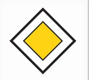
自行车道（Velostreifen）
- 路面上没有自行车时，必要情况下可以稍微借用一点虚线自行车道。
- 但在路口等红灯停车时，需要给右侧自行车留出通行空间，尽量不要把自行车道堵死。
- 如果前方有自行车，在安全且视野良好时果断加速超过（保持足够横向安全距离）。
- 在人行横道附近绝对不可以超车，因为视野受阻且路面较窄，非常危险。
拐弯与路口标线
- 拐弯原则：
- 拐弯过程中严禁随意变道，严格顺着地面导流线行驶。
- 在小路口右拐时要尽量靠右，否则对向有车想拐进来时会没有空间。
- STOP 线：
- 看到地上的
STOP标线或八角形停牌，无论路口有没有车和行人，都必须把车完全刹停（停稳约 2–3 秒），确认安全后再起步。 - 左拐时绝对不能压到左侧对向车道的 STOP 线，宁可绕大一点的弯。
- 倒三角让行线（Triangle / Wartelinie）：
- 有些红绿灯路口地面画着一排小倒三角形，位置通常比红绿灯停止线更靠前。
- 白天红绿灯正常工作时，要停在前面的实白线处等灯；这条三角形线一般只在夜间信号灯关闭时作为让行停车参考。
环岛 / 转盘（Roundabout / Kreisel）
- 进环岛前，环岛内左侧来车拥有绝对优先权。
- 进环岛时车速要慢（一般控制在
20 km/h以下）。 - 出环岛前必须提前打右转向灯，同时特别留意右侧可能直行的自行车和过街行人。
高速公路（Autobahn）
- 瑞士高速严格执行靠右行驶原则（Rechtsfahrgebot），左侧车道仅用于超车。
- 进入高速并看到地面变为虚线后，安全观察并打灯逐步并入最右侧行车道。
铁路道口
- 遇到铁路道口栏杆放下或红灯闪烁等待火车通过时，需要完全停车熄火、拉手刹并关闭近光灯（避免晃到对向车辆）。
- 等栏杆完全抬起且警示红灯彻底熄灭后再起步通过。
公交站与有轨电车（Bus / Tram）
- 从路边凸出的公交停靠区或实线公交专用道不可随意占用；遇到公交车打左灯准备出站时，在市区路段通常需要礼让。
- 苏黎世市区 Tram 线路极多，注意 Tram 的优先权及路口盲区（后续具体路线篇会结合实景截图详细拆解）。
3. 瑞士常见交通标识速查
更多完整标识可参考：Road Signs in Switzerland (e-university.ch)
- 高速公路（Autobahn）：
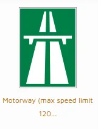
- 主路（拥有优先权）：
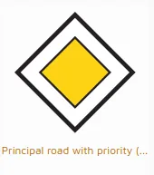
- STOP（必须完全停车）：
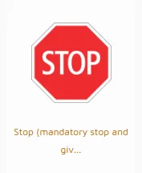
- 单行道（允许驶入方向）：
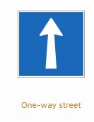
- 单行道禁止驶入（另一侧）：
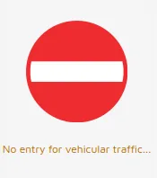
- 双向所有车辆禁止通行：
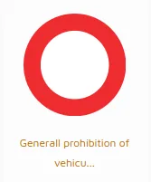
- 机动车禁止通行：
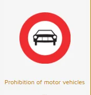
- 禁止停车：
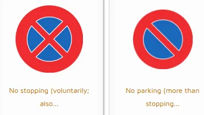
- 会车优先权（让行 / 优先于对向来车）：
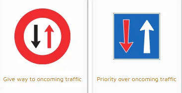
- 最高限速：
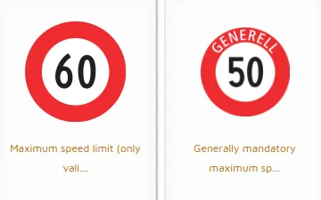
- 最低限速：
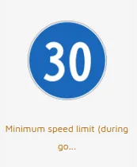
Part 3 of series «瑞士学车记»：
- 瑞士学车记1 - 国内驾照换瑞士驾照
- 瑞士学车记2 - 瑞士驾照理论考试与交规备考
- 瑞士学车记3.1 - 苏黎世路考通用交规、停车要领与常见路标
- 瑞士学车记3.2 - 苏黎世 STVA 路考路线复盘：教练带练高频路段（Markus）
- 瑞士学车记3.3 - 苏黎世 STVA 路考路线复盘：湖西岸与 A3 高速片区（Wollishofen / Kilchberg / Thalwil）
- 瑞士学车记3.4 - 苏黎世 STVA 路考路线复盘：Sihltal 河谷片区（Leimbach / Adliswil / Langnau / Brunau）
- 瑞士学车记3.5 - 苏黎世 STVA 路考路线复盘：西线山区与市中心片区（Birmensdorf / Uitikon / Wettswil / Zoo）
- 瑞士学车记4 - 拿照实战：沿湖 Seestrasse 往返苏黎世大学医院（USZ）路线记录
Disqus 留言